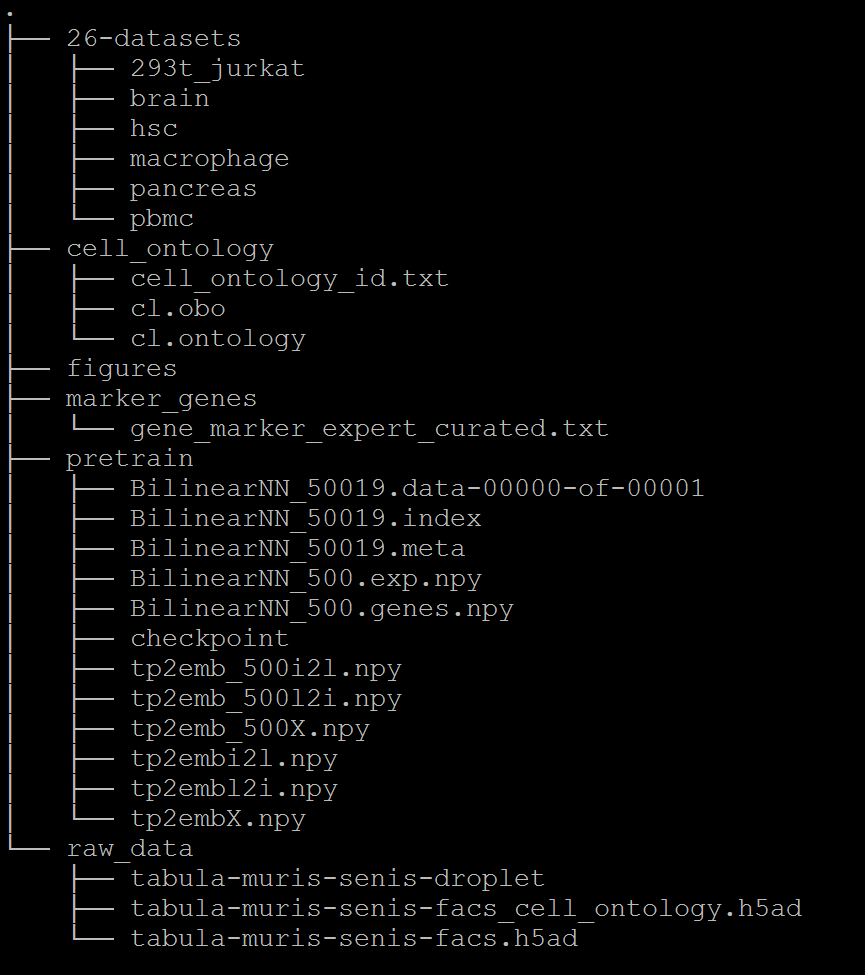

Title underline too short.
Dataset and pretrained models =========
The datasets used by OnClass paper can be found at figshare.
We provided the following datasets.
Currently, we include:
Title underline too short.
1) 26-datasets ~~~~~~~~~
26-datasets obtained from Scanorama project.
Title underline too short.
2) cell_ontology ~~~~~~~~~
The Cell Ontology file used in our analysis, which is downloaded from OBO Foundry.
Title underline too short.
3) figures ~~~~~~~~~
Reproduced figures in the paper using OnClass.
Title underline too short.
4) marker_genes ~~~~~~~~~
Marker genes for 2331 cell types identified by OnClass and curated by experts
Title underline too short.
5) pretrained model ~~~~~~~~~
cell type embedding and pretrain prediction model
Title underline too short.
6) raw data ~~~~~~~~~
Gene expression data for FACS cells and droplet cells used in our analysis.
For questions about the datasets, please contact Sheng Wang at swang91@stanford.edu.